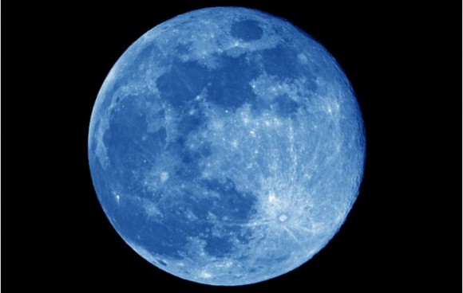

This article is about Earth's natural satellite. For moons in general, see Natural satellite. For other uses, see Moon (disambiguation).
Diameter(km)
22.2 km
Mass(kg)
2x1015
Orbital period
30.35 h

Venus's Fake Moon1.
The Moon is in synchronous rotation with Earth, always showing the same face with its near side marked by dark volcanic maria that fill between the bright ancient crustal highlands and the prominent impact craters.